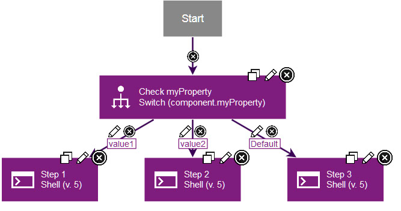
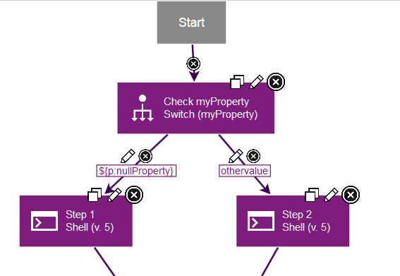

Switch steps
A switch step is a utility step that you use to branch process, based on the value of a property.
When you add a switch step, you specify a property, either as the property name itself or in the
same form as you would use in other steps, such as
${p:propertyName}. Then, you add two or more outgoing
connections from the step, each with a possible value for that property. At run time, the
process follows the connection with the matching property value. The process also follows any
connections with fail or both conditional flags.
value1 and value2. The third connection has the
default value, which means that the process follows this connection if no other
values are matched.
To set the property to use, add the Switch step to the process and click the edit properties
icon  . In the step properties, specify the property, either by specifying the property name
by itself or in the same form as you would use in other steps, such as
. In the step properties, specify the property, either by specifying the property name
by itself or in the same form as you would use in other steps, such as
${p:propertyName}. You cannot use a secure property in
this step.
othervalue value, step 2 runs.